オフィスカーペットクリーニング！中央区日本橋横田アソシエイツ様のフロアカーペットクリーニング2回目を実施しました!
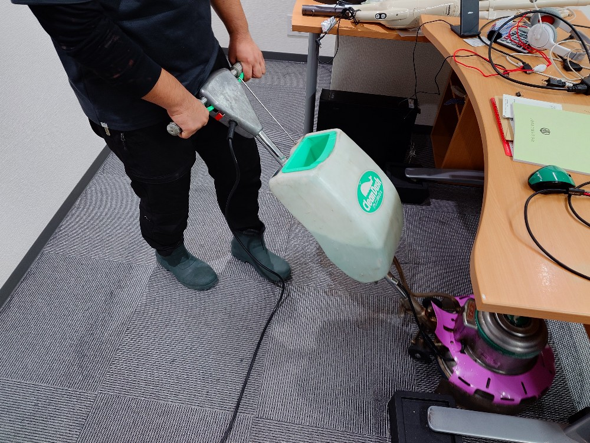
中央区日本橋の横田アソシエイツ様のオフィスフロアカーペットクリーニング2回目を実施しました!横田アソシエイツ様は、KO大学Y教授様がコンサルタントとしてご活躍していらっしゃる著名オフィスです、今回2回目のフロアカーペットクリーニングを実施しました。多くのメンバーが活動なさっているオフィスですと、どうしてもフロアに飲み物（コーヒーのこぼし跡）などの汚れが付着してしまうことがありますので、それらをDAIZENプロフェッショナルメソッドを用いて除去クリーニングしました。ドイツ製カーペット専用薬剤はとても秀逸で、汚れを一旦カプセル内に閉じ込め浮かせます、そのカプセルをカーペット専用ポリッシャーで更に浮かせてバキューム吸引除去して隅々まで綺麗にします。朝のまだオフィスメンバーが集まる前に、フロアカーペットクリーニングを実行して、乾燥させて終了です。オフィスメンバーさんがご出社なされる時には、綺麗なフロアカーペットのオフィスに戻っていますのでとても気持ち良いです！ぜひDAIZENのプロフェッショナルカーペットクリーニングをご体験下さい!
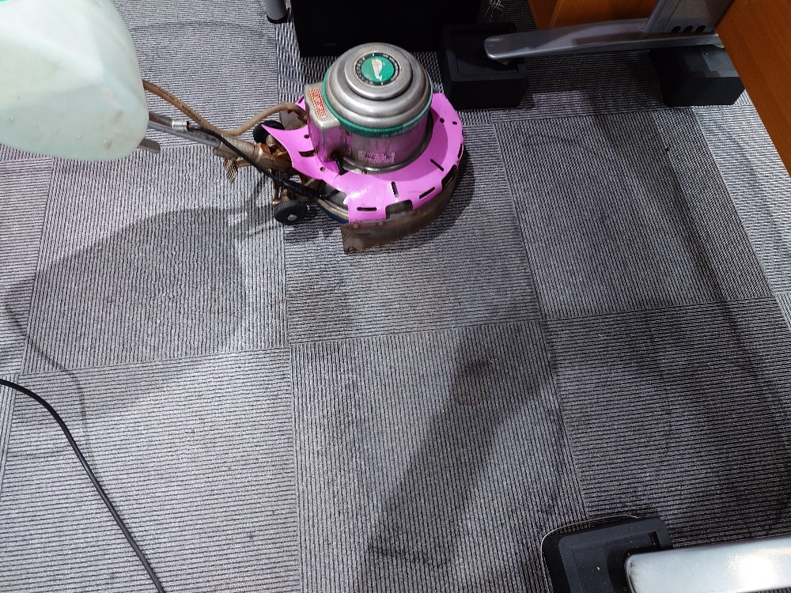
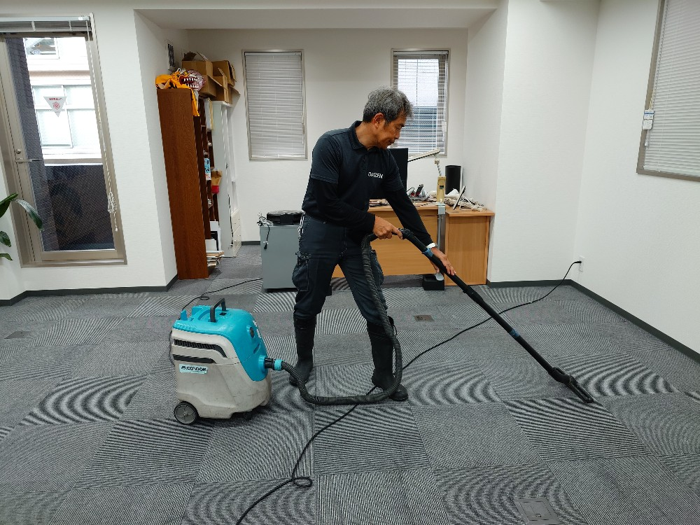
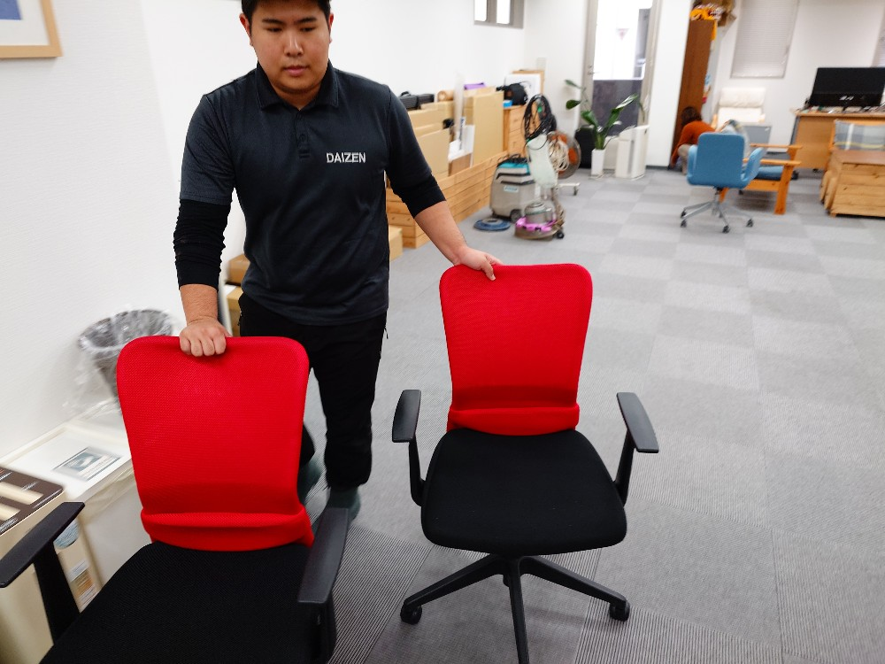
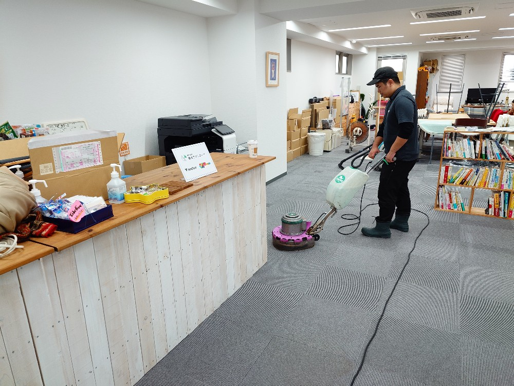
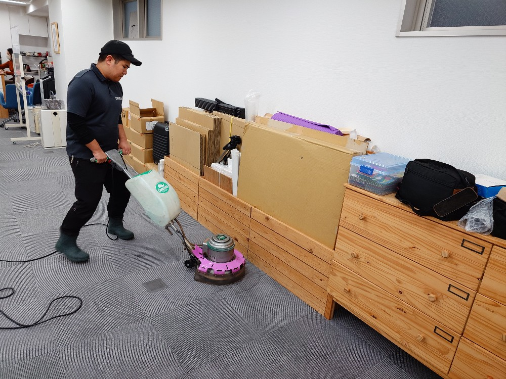
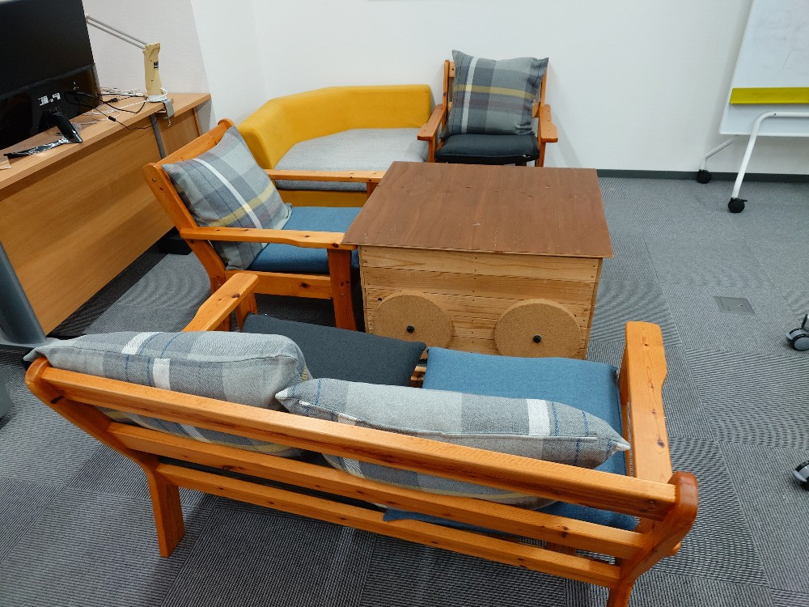
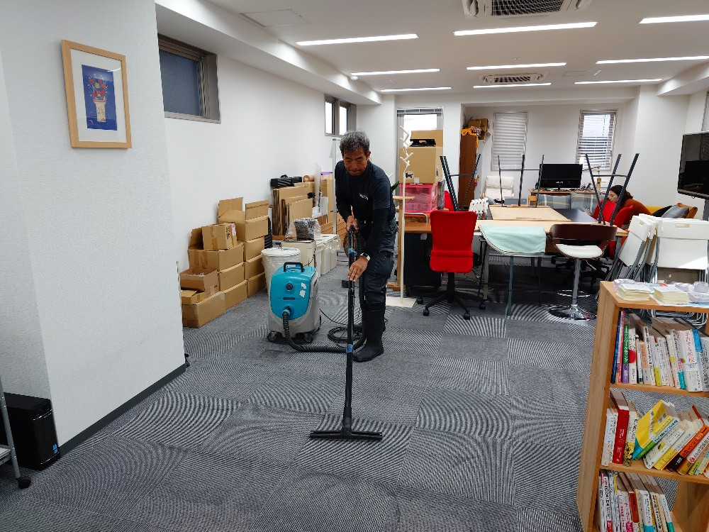
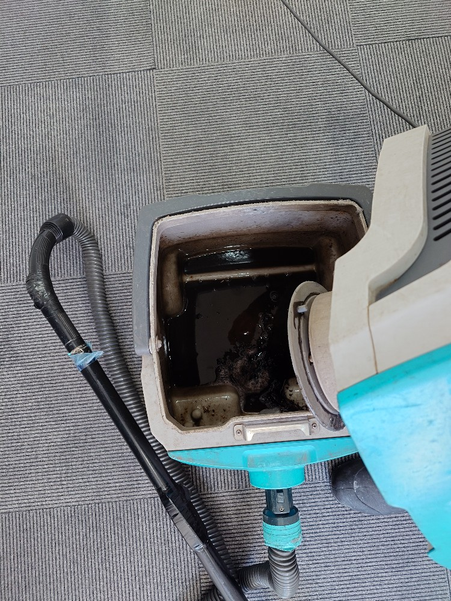
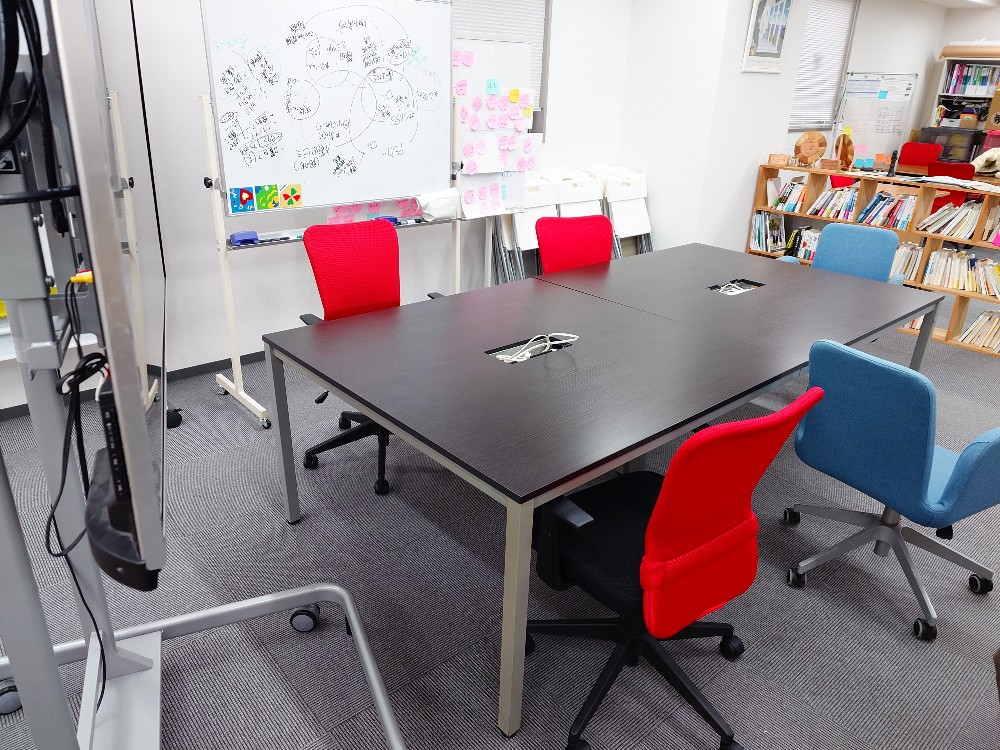
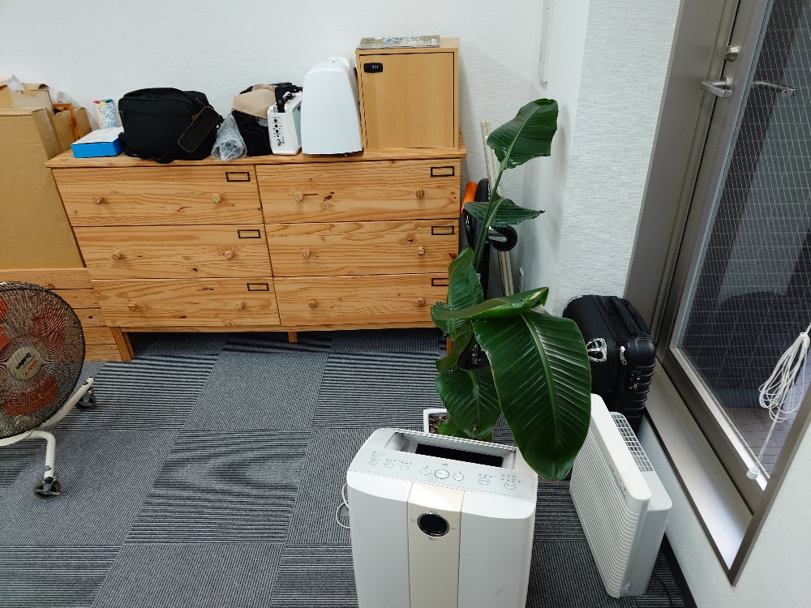
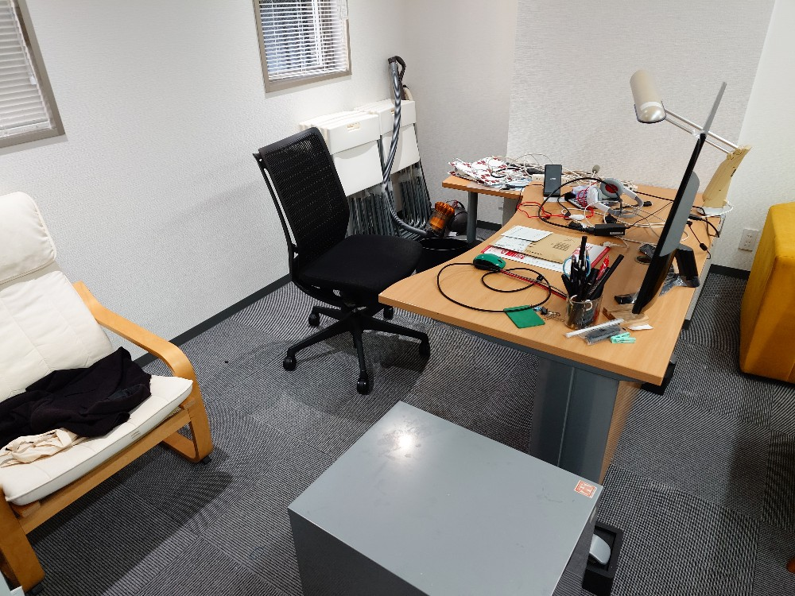